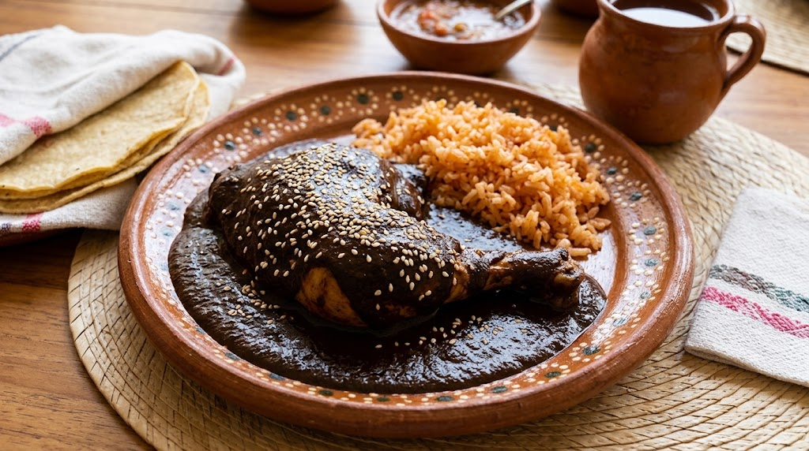

Mole Oaxaqueño (Mole Negro)

El mole negro es el rey de la gastronomía de Oaxaca. Tiene un sabor profundo, un toque dulce por el chocolate y un aroma inconfundible.
Ingredientes
- 1 pollo entero en piezas
- Chiles pasilla y mulato
- 1 plátano macho maduro
- Almendras, nueces y cacahuates
- 1 tablilla de chocolate oaxaqueño
- Ajonjolí tostado (para decorar)
Preparación paso a paso
- El caldo: Cuece el pollo en agua con cebolla, ajo y sal. Reserva el caldo.
- Tostar y freír: Tuesta los chiles sin que se quemen. Fríe el plátano y las semillas.
- La pasta: Licúa los chiles y los ingredientes fritos con un poco del caldo del pollo.
- Cocinar: Fríe la pasta en una cazuela, agrega el chocolate y más caldo al gusto.
- Servir: Añade el pollo, deja hervir a fuego lento por 15 minutos y sirve con arroz.